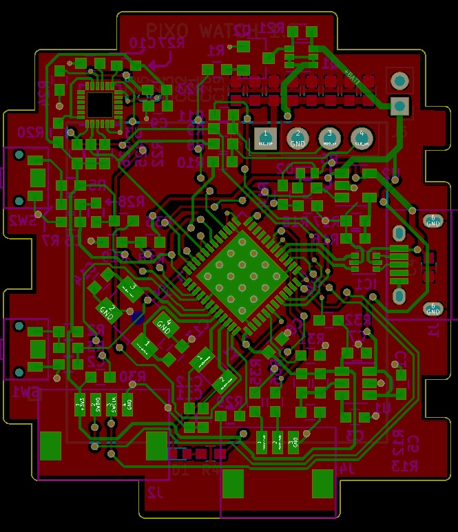

(work in progress)
A couple of months back, I was looking for a project to take on, preferably something related to wearables. Looking for ideas, I stumbled upon an article by Sean Hodgins on Hackaday. He was using individually addressable RGB LED’s to make a 16*16 screen which actually looked amazing and had a retro look. I loved the look of the pixels so much that I decided to make a watch with the RGB LED’s as a screen and hence the project PIXO watch.
Not all features above have been accomplished, but I will keep on working on them as I find time.
This is a very simple embedded hardware which includes a microcontroller, IMU sensor, RGB LED grid, and some power supply components.
MCU that I am using is definitely an overkill. But the plan is that, I am learning to develop drivers for the peripherals, I might as well select a microcontroller with a variety of peripherals which I could use for future projects.
Datasheet for STM32L452CEU says the following: -
LED Grid is driven with SPI Bus at 500Khz. Which means that very high refresh rate could be achieved if needed. Of course, it will depend on the number of the LED’s driven. I will do an article on how to use these LED’s using SPI in the future, also explaining some challenges I had to face working with these LED’s.
Time keeping is done using RTC peripheral in the MCU, therefor no RTC IC was needed for it. The RTC peripheral is provided with an external Crystal of 32.7680KHZ for high accuracy in case the time is not updated for too long.
I have added an 8MHz crystal for the main clock, but it is not necessary for the operation of the watch. MCU can run on its internal RC clock.
Power scheme is as following:- Female Micro USB connector is used to plug the cable in to charge the battery through an Li-Ion cell charge controller IC “MCP73831T”, which takes care of all the things like amount of charging current, charge voltage and much more. It also provides Charge status of the battery. Output of this IC is connected to Battery.Battery then provide power to the LDO regulator giving output of 3.0V to the MCU, IMU etc. LED’s are directly power by the battery.
I have added two push buttons for interacting with the watch.
Watch has also got an IMU with accelerometer, Gyroscope, magnetometer in a single package. It was added for watch to turn ON when wrist is raised and to count the steps (both of these functionalities haven’t been added in the software yet.
Every LED consumes a significant amount of current even when they are off. So a P-channel MOSFET is added between Battery “+” and the VCC of the LED’s so that the LEDS are completely shut down when required. P-channel MOSFET is controlled by another N-channel MOSFET. Surprisingly, these LED’s can draw significant amount of current through CLK and DATA pins as well when not powered through VCC. Therefor resistors were added between CLOCK and MOSI of MCU and the corresponding pins on LED grid.
MCU on the watch can go to sleep mode when ever the watch is needed to be ON. This will help conserve battery power. This is not implemented in the software yet. (I will talk about the power consumption of the Watch in an another article).
There is a lot more to cover in this project, which I will cover in subsequent posts.
I am writing the firmware using lite version of Kiel uVision 5 which is free but with a limit of 32KB of code and data. It is an easy to use and professional IDE that I personally like mostly because this is what I was introduced to me in the college.
So far, I have written a very basic structure of the code, enough to run every different part of the hardware. I am actively writing code and will keep on updating the repository on GitHub. Please check back at this blog for updates.
The schematic and PCB files can be found on my github account
